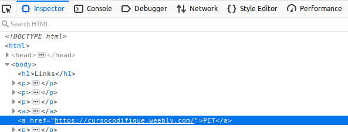

Links são a base para sites da internet. Para chegar aqui você precisou acessar um link! Eles funcionam bem intuitivamente.
Primeiro você deve criar um pedaço de texto no qual você vai colocar o link. Depois, é só fazer a referência para onde você vai ao clicar no link.
Para isso, usamos a propriedade 'href' da tag 'a'. Veja o texto a seguir. Ele é um link para a página do codifique. Clique nele.
CodifiqueViu que ele te mandou para a página certinho? Agora, clique no link com o botão direito e selecione 'Inspecionar elemento'. Você deve ver algo parecido com isso:
Veja como é apenas fazer a referência entre aspas do link que você quer ir para a propriedade 'href' da tag 'a'.
Links internos fazem referência a um arquivo dentro da pasta do site que você está fazendo. Vai ser útil nos seus próprios projetos se você quiser fazer sites com várias páginas
Para fazer a referência, basta colocar o caminho do arquivo (pasta1/pasta2/arquivo) ou simplesmente o nome do arquivo se ele estiver na mesma página.
Confira como faz a referência inspecionando o link 'Home' no início da página.
Link externo foi o usado no nosso primeiro exemplo. Ele faz referência a uma página da web. Para fazer a referência, basta copiar o link da página e
colocar dentro das aspas em 'href'.
Se você quiser que o link no qual você está clicando abra em outra aba ou janela, basta colocar a propriedade 'target="_blank"' dentro da tag 'a'. Inspecione o próximo elemento e teste:
GoogleVocê também pode ir para outro lugar da página com links. Isso se chama ancora, e ela é denotada por '#id'. Para isso, você precisa saber IDs, outra seção desta página. Inspecione voltar para o topo
Voltar para o topo